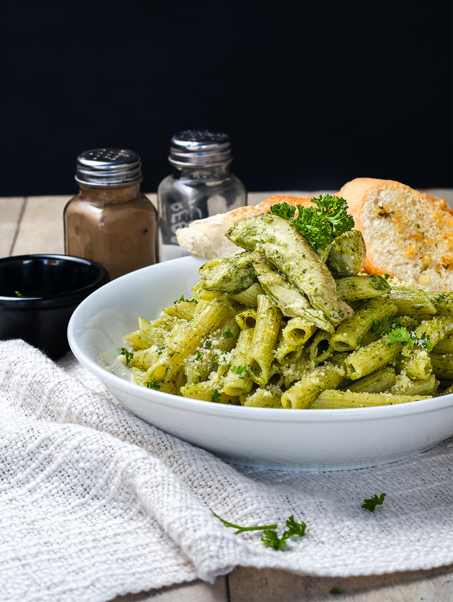

Pesto Pasta

Source: https://unsplash.com/photos/cBrhiz8XHAs
Description
This top-rated pesto pasta recipe, which comes together in just 15 minutes, is the perfect quick and easy weeknight dinner.
Ingredients
- 1 (16 ounce) package pasta
- ½ cup chopped onion
- 2 ½ tablespoons pesto
- salt to taste
- ground black pepper to taste
- 2 tablespoons grated Parmesan cheese
Steps
-
Fill a large pot with lightly salted water and bring to a rolling boil.
Stir in pasta and return to a boil. Cook pasta uncovered, stirring occasionally,
until tender yet firm to the bite, about 8 to 10 minutes. Drain and transfer into a large bowl.
-
Meanwhile, heat oil in a frying pan over medium-low heat.
Add onion; cook and stir until softened, about 3 minutes.
Stir in pesto, salt, and pepper until warmed through.
-
Add pesto mixture to hot pasta; stir in grated cheese and toss well to coat.